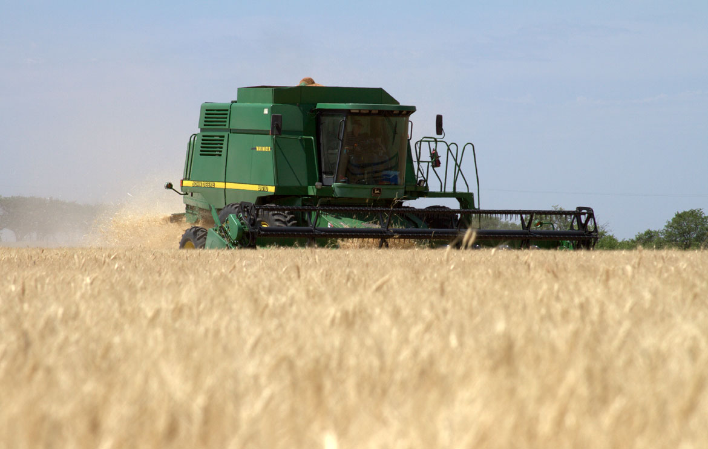
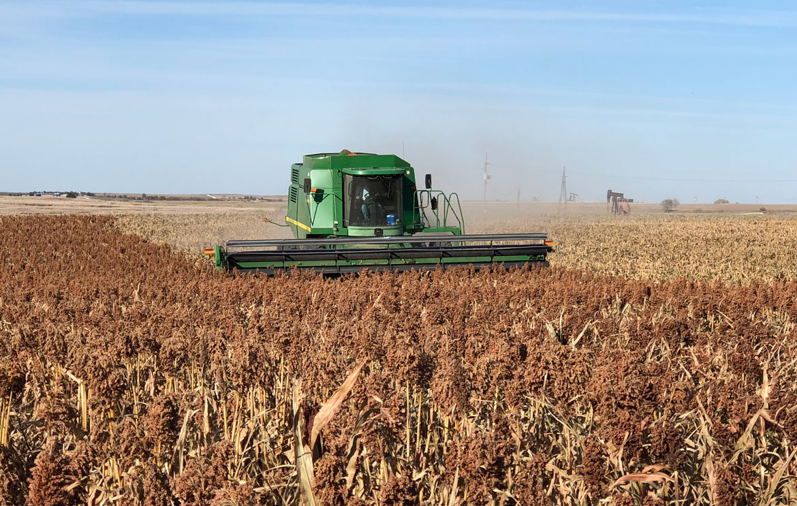
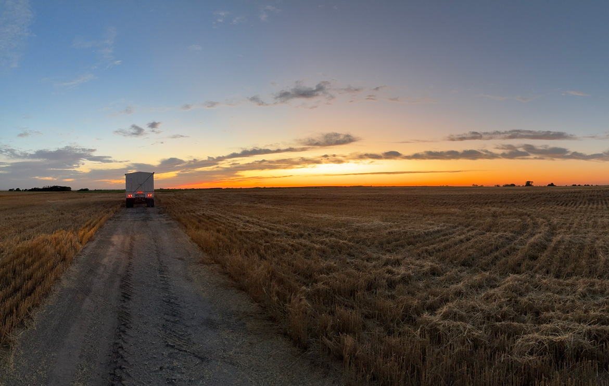

Farm Operations in North Central Kansas
In north central Kansas, where rainfall is limited, our farm focuses on a traditional dryland crop rotation of wheat, sorghum, and fallow, aiming for profitability and sustainability in a semi-arid climate. This strategy is essential as corn and soybean production are inconsistent due to the region's weather patterns.
Hard Red
Winter Wheat

Grain Sorghum
As the leading state for Grain Sorghum production in the U.S., with over 200 million bushels, Kansas leverages sorghum's drought tolerance. Planted in a no-till environment from late May to early June, sorghum thrives in heat, requiring adequate rainfall for optimal growth. With row spacings of 20-30 inches and seed rates of 36,000 to 50,000 per acre, sorghum emerges in 5-7 days and begins to tiller. The flowering and head formation phase in mid-summer is critical for moisture. As autumn approaches, the focus shifts from leaf to grain production, with harvest occurring from mid- to late-October, depending on weather conditions.


Forage and Cover Crops
Sustainability and Economic Viability
Throughout the year, we emphasize managing runoff, employing no-till and minimum-till practices, and using proper fertility techniques to build healthy soil and water systems. Our approach to sustainable agriculture is not only about environmental stewardship but also about maintaining profitability. By adopting these practices, we ensure that our land remains productive for future generations while adapting to economic shifts favoring different crops.